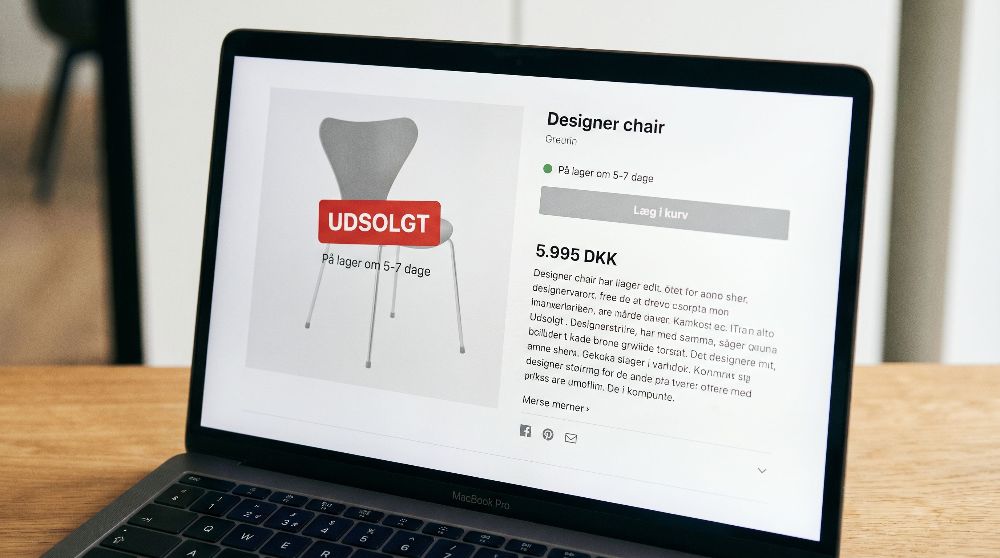

"Forventet på lager om 5-7 dage." Det er en af de sætninger der stille og roligt drsener konverteringer på tusindvis af danske webshops. Kunden lander på produktsiden, ser den besked, og klikker vaek. Tilbage til Google. Over til konkurrenten der har varen på lager.
Det ironiske er, at mange webshops ikke engang ved, hvor mange salg de taber til den besked. De maler ikke konverteringsraten på udsolgte produktsider separat. De ser bare at salget er lavt, og troer det er fordi efterspoorgslen er lav.
Det er ikke altid tilfældet. Efterspoorgslen er der. Lagerstyringen er ikke.
👉 SmartPack giver dig realtids lagerstatus og advarsel foer du loeber toemte. Se systemet
Hvad sker der med kunden naer de ser udsolgt
Kundernes adfaerd ved udsolgt-status er veldokumenteret i eCommerce-analyse. Her er hvad data typisk viser:
- 40-70% forlader produktsiden omgånde. De bouncer ud, oftest tilbage til Google eller til en konkurrent. Chancen for at de vender tilbage er lav: under 15% returnerer til den samme webshop inden for 7 dage.
- 10-25% klikker vidare til en alternativ vare på din webshop, men kun hvis du aktivt foreslår den. Uden en "Du kaa også godt lide"-sektion eller lignende, forsvinder de fleste.
- 5-15% tilmelder sig lagerstatus-notifikation hvis du tilbyder det. Det er en lille men værdifuld gruppe: de er motiverede købere. Konverteringsraten på notifikationsmailen er typisk 20-35%, markant hojere end normale email-kampagner.
Det vil sige: for hvert 100 besogene på en udsolgt produktside, mister du 40-70 salg direkte. Af de tilbageværende er det en lille del du kan konvertere via notifikation og alternativer.
Hvad vag lager-kommunikation koster dig
Vag kommunikation er næsten vaerre end ingen kommunikation. Formuleringer som "forventet hjem snart", "midlertidigt udsolgt" og "på lager igen snarest" skaber frustration og usikkerhed. Kunden ved ikke om det er 2 dage eller 2 maaneder. Det præcise estimat er altid bedre end det vage, selv om det vage ville være rigtigt.
Konkret: en produktside der viser "På lager igen tirsdag den 13. maj. Bestil nu og faa den leveret fra den dato" konverterer langt bedre end "Forventet på lager inden for 5-7 dage". Kunden får en konkret dato at forholde sig til og kan tage en beslutning.
Fem ting du kan gøre på en udsolgt produktside
- Vis en konkret restock-dato. Kend den og vis den. Arbejd med dine leverandoerer på at faa bekraeftede leveringsdatoer saa tidligt som muligt, saa du kan kommunikere det til kunderne.
- Tilbyd preorder med rabat. Naer du ved hvornår varen er hjem, kan du tilbyde en preorder-funktion. En lille rabat på 5-10% til preorder-kunder er en win-win: du sikrer salg og kunden får en fordel for sin taalmodighed.
- Notifikation ved hjem på lager. En simpel email eller SMS-notifikation naer varen er hjem igen. Implementer det via din e-mail platform. Konverteringsraten på disse beskeder er 20-40%, saa de er vard at prioritere.
- Vis alternativer aktivt. En sektion med "Lignende varer på lager" på udsolgte produktsider kan redde en stor del af konverteringen. Saelger du mode, vis samme stiltype. Saelger du elektronik, vis nærmeste alternativ.
- Brug trafik fra udsolgte sider strategisk. En udsolgt side rangerer stadig i Google og tiltrækker trafik. Lad den være synlig med tydelig status, tilbyd notifikation og redirect til alternativ. Skjul den ikke i søgeresultaterne.
Rodårsagen: lagerstyring der ikke holder trit
Udsolgte produkter er en symptom, ikke en rodårsag. Rodårsagen er typisk en af disse:
- Manglende reorder-points. Du har ikke sat et minimum-lagerniveau der udløser en genbestilling. Varen loeber tom foer bestillingen er lavet.
- Lang lead-time fra leverandoer. Hvis din leverandoer har 3-4 ugers leveringstid, skal du genbestille langt tidligere end de fleste husker.
- Utilstrækkelig salgsprognose. Sæsonale udsving eller kampagner toemmer lageret hurtigere end normalt, og der er ikke kompenseret for det.
- Manglende synlighed på realtids-lager. Sysstemet opdaterer ikke webshoppens lagerstatus hurtigt nok. Kunden ser "på lager" men lageret er faktisk tomt.
Hvert af disse problemer har en løsning. Men foer du kan løse dem, skal du vide hvilke der er dine problemer. Det kræver synlighed i dit lagerniveau og dine salgsdata.
Maaling: hvad du skal tracke
Start med at segmentere din konverteringsrate på produktsider med lagerstatus. Sammenlign konverteringsraten for produkter på lager vs. produkter med restock-besked. Det giver dig den direkte årsagssammenaeng og dokumenterer, hvad bedre lagerstyring er vaard i kroner.